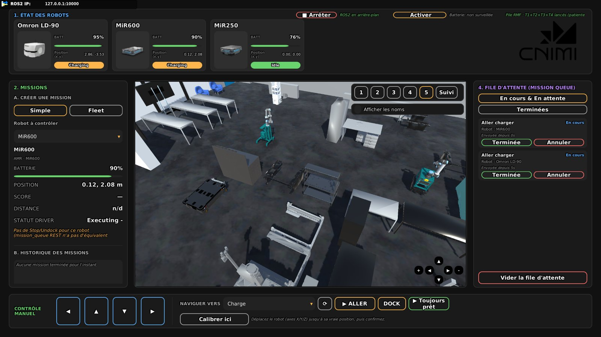
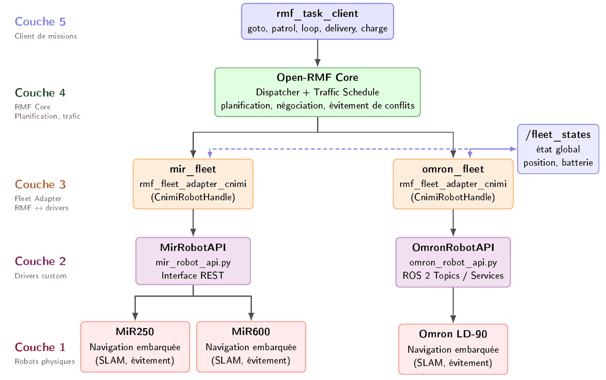
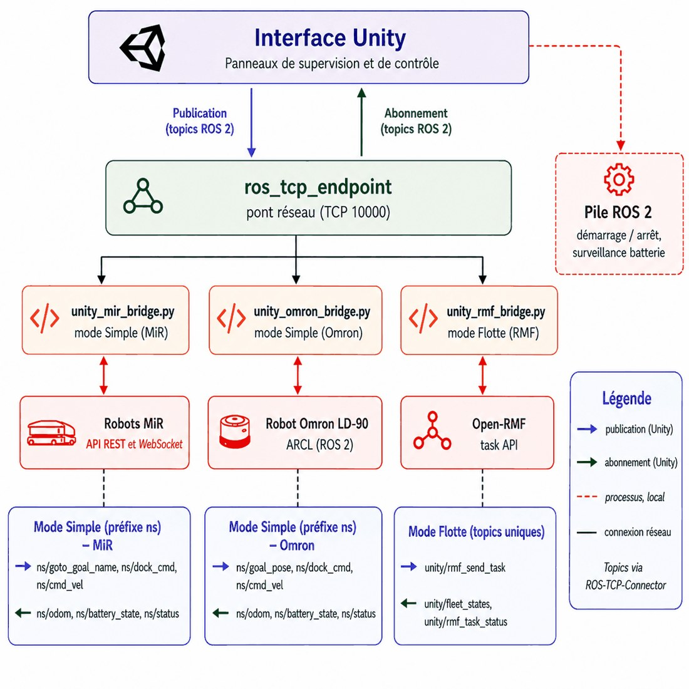
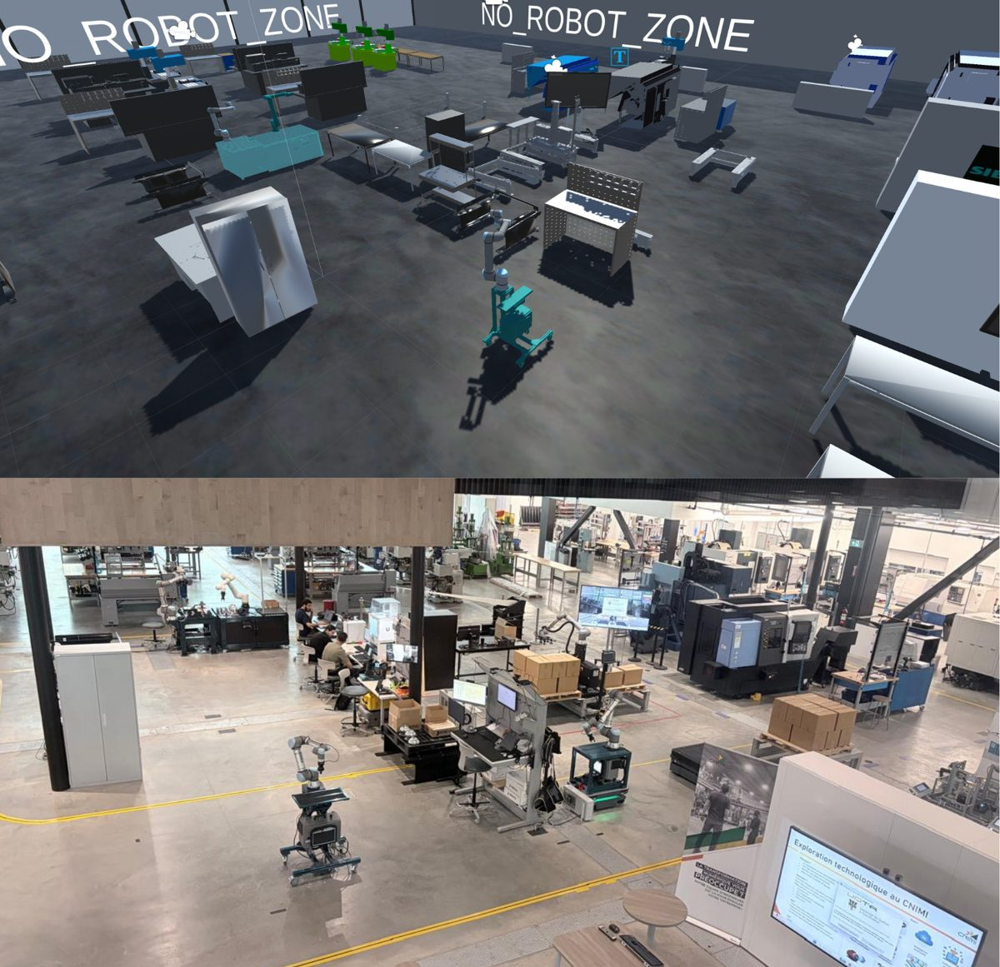

01 · FEATURED · FINAL-YEAR PROJECT
Heterogeneous AMR fleet management with a Unity digital twin
Three autonomous mobile robots from two manufacturers, each with its own navigation stack, protocol and map frame, made to work as one fleet: a common ROS 2 integration layer, Open-RMF orchestration and a live Unity digital twin, validated on the real robots.
THE CHALLENGE
The MiR robots speak REST and WebSocket, the Omron LD-90 speaks ARCL over TCP, and each robot localises in its own map. Left alone they work in silos: no shared frame, no mission allocation, no traffic coordination.
- ROS 2 Jazzy
- Open-RMF
- Unity
- ROS-TCP-Connector
- REST / WebSocket
- ARCL
- Python
- C++
- Linux

01
Integrate
One ROS 2 interface for every robot
- MiR driver: rosbridge WebSocket for real-time state and motion, REST API for missions.
- Omron driver: TCP client, ARCL parser and ROS 2 node in three layers, with automatic reconnection.
- Common frame: each robot calibrated against the shared RMF map with its own offset.
- MiR software stack migrated from ROS 1 to ROS 2 Jazzy.
02
Orchestrate
Open-RMF on top, robots unchanged
- Two fleets (MiR and Omron) bid for each task; the dispatcher picks the earliest finish time.
- Navigation graph drawn on the lab map: lanes, waypoints and charging stations.
- Custom fleet adapter and mission client for goto, patrol, loop, delivery and charge.
- Battery monitor sends a robot to charge at 20 % and frees it again at 40 %.
03
Supervise
A live Unity twin of the CNIMI lab
- Virtual lab rebuilt on the robots' own map, with URDF models of the three robots.
- Simple mode: go to, dock, stop, jog and calibrate each robot directly.
- Fleet mode: missions sent through Open-RMF, whole fleet shown live.
- Every mission logged with duration and battery use; Unity chosen after comparing Gazebo, Isaac Sim and Unreal.
ARCHITECTURE · FIGURES FROM THE REPORT



RESULTS ON THE REAL FLEET
3 / 3robots driven and supervised from one interface
6test destinations auto-allocated by Open-RMF
≈ 4 saverage gap between fleet mode and direct command
0collisions or deadlocks in the intersection-conflict test